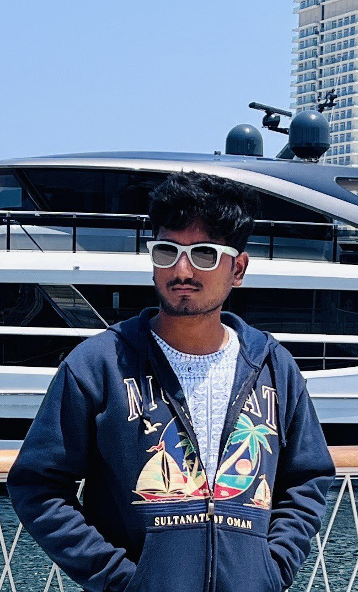

Hi I'm Sriramanan

I'm an Engineering Graduate and
A Tech Enthusiast
EDUCATION
- SSLC(10th Grade) - 96% at Mount Zion Matriculation Higher Secondary School, Pudukkottai.
- HSC(12th Grade) - 81% at Mount Zion Matriculation Higher Secondary School, Pudukkottai
- Bacholer's in Electronics and Instrumentation Engineering - CGPA - 8.42 at Sri Ramakrishna Engineering College, Coimbatore
WORK/INTERSHIPS
Assistant Research Paper Reviewer
- Narrated research papers based on the information from the researchstudents at NIT Calicut.
Appian developer (ATC)
- I've Created fully responsive web applications using Appian software and its framework and SAIL programming language
SKILLS
Programming Languages known
- C and Data structures Good 😀
- HTML 5 Good 😀
- Javascript Beginner 🙂
- CSS Beginner 🙂
Softwares Known
- MATLAB Beginner 🙂
- LABVIEW Beginner 🙂
- PyCharm Beginner 🙂
PROJECTS
Measurement of eye parameters using computer vision
- To automatically measure the eye-coordinate to yield perfect frame size for every face structure.
Anti-Drowning Airbag
- A wearable device with compressed airbag that can inflate when needed to save people from drowning.
AWARDS AND ACHIEVEMENTS
Semi Finalist in YUVA INNOVATERS CHALLENGE conducted by IIT Bombay on OCT 2021
Completed 3 levels in E-Yantra on JAN 2022
Cleared Level B1 in BEC - Business English Certificate with the score of 155 out of 175 conducted by Cambridge university London